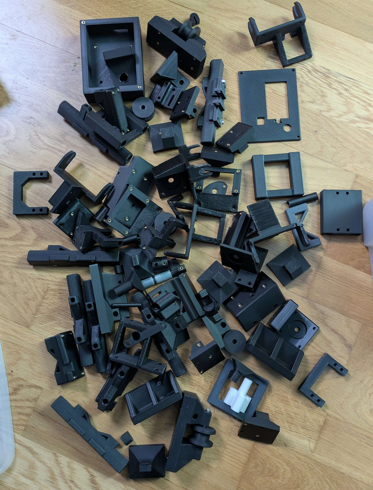

Conception Numérique et Prototypage
Le développement de MachineThatDraws a suivi un cycle d'ingénierie complet, passant de la modélisation numérique à un premier prototype fonctionnel avant de finaliser la version définitive.
1. Conception Assistée par Ordinateur avec Onshape
Pour concevoir la machine, nous avons utilisé le logiciel de CAO professionnel Onshape. Notre approche a été de concevoir la structure autour des composants standards.
- Modélisation descendante (Top-Down) : Nous avons utilisé les modèles 3D des pièces imposées ou standards (moteurs NEMA 17, roulements, ESP32 UNO, servomoteur). Cela nous a permis de modeliser nos pièces pour les imprimées en 3D avec des tolérances parfaites, garantissant un bonne assemblage.
- Le défi technique : La pièce la plus complexe à modéliser a été le système de supports de l'axe X. Il a fallu gérer l'alignement précis des axes, la fixation rigide du moteur, et surtout concevoir un système de pincement pour la courroie GT2. Ce système a été pensé pour que la courroie soit facilement démontable et remontable, une fonctionnalité qui était indispensable pour relâcher la tension lorsque la machine est entreposée entre deux sessions de travail avant d'avoir les tendeurs.
2. Le Premier Prototype (Semestre 1)
Notre objectif pour le premier semestre était de réaliser un modèle de validation pour tester le chassis cartésien et la chaîne logicielle (du G-Code jusqu'aux moteurs).
- Une architecture ressemblante : Visuellement, le châssis de cette première version était très proche de la version finale, validant l'utilisation des axes linéaires et des courroies.
- L'électronique de test : Ce prototype utilisait le combo classique Arduino Uno et CNC Shield V3 pour tester le chassis et nos fonctionnalitées avant le passage à ESP32 UNO et au circuit imprimé fait maison.
Bien que fonctionnelle, cette première version souffrait d'une tête de mauvaise qualité. Le mécanisme de maintien du stylo avait énormément de jeu mécanique. Lors des changements de direction rapides, le stylo tremblait, rendant les tracés imprécis et gâchant la qualité des dessins complexes. C'est ce problème qui a motivé la conception d'une tête beaucoup plus rigide pour la suite.
3. Cycle d'Itération et Gestion des Déchets
Le passage du prototype à la version finale n'a pas été immédiat. Il a nécessité des dizaines de micro-itérations : corriger un trou de vis d'un millimètre, ajuster une tension de courroie, ou renforcer une patte de fixation. Cela génère inévitablement une quantité importante de pièces d'essai.

Plutôt que de simplement jeter ces prototypes obsolètes, nous pratiquons la récupération active des composants coûteux. Comme mentionné dans la partie Impression 3D, nous utilisons des inserts filetés en laiton. Avant de mettre au rebut un prototype, nous utilisons un fer à souder pour extraire proprement ces inserts. Cela nous permet de les réutiliser sur les versions suivantes, réduisant le coût matériel et l'empreinte écologique du projet.
4. Validation du Premier Tracé
Malgré les défauts de la première tête d'impression, nous avons réussi à valider l'intégralité de la chaîne de commande. Après avoir configuré les pas par millimètre ($100 et $101) dans GRBL, nous avons lancé le tout premier tracé complexe.
Ce premier succès, bien qu'imparfait mécaniquement, a validé le concept et nous a donné le feu vert pour lancer le développement de la version finale (ESP32, circuit imprimé maison, tête rigide).